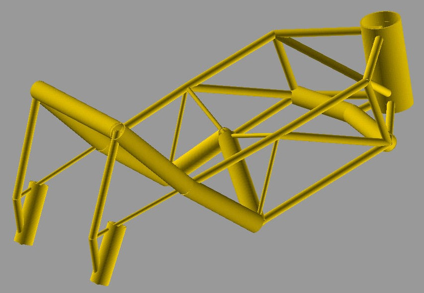

MAPDL Motorbike Frame - Project Creation#
This example shows how to create from scratch a REP project consisting of an Ansys APDL beam model of a tubular steel trellis motorbike-frame. After creating the project job_definition, 10 design points with randomly chosen parameter values are created and set to pending.
{kind=link}
The model is parametrized as follows:
three custom tube types are defined whose radius and thickness can vary in a certain range;
for each tube in the frame there is a string parameter specifying which custom type it should be made of;
output parameters of interest are the weight, the torsion stiffness and the maximum von Mises stress for a breaking load case.
For further details about the finite element model and its parametrization, see “Using Evolutionary Methods with a Heterogeneous Genotype Representation for Design Optimization of a Tubular Steel Trellis Motorbike-Frame”, 2003 by U. M. Fasel, O. Koenig, M. Wintermantel and P. Ermanni.
The project setup script as well as the data files can be downloaded here MAPDL Motorbike Frame Project.
"""
Example script to setup a simple MAPDL project with parameters in pyrep.
Author(s): O.Koenig
"""
import argparse
import logging
import os
import random
from ansys.rep.client import Client, REPError, __external_version__
from ansys.rep.client.jms import (
File,
FitnessDefinition,
FloatParameterDefinition,
JmsApi,
Job,
JobDefinition,
Licensing,
ParameterMapping,
Project,
ProjectApi,
ResourceRequirements,
Software,
StringParameterDefinition,
SuccessCriteria,
TaskDefinition,
)
log = logging.getLogger(__name__)
def create_project(
client, name, version=__external_version__, num_jobs=20, use_exec_script=False
) -> Project:
"""
Create a REP project consisting of an ANSYS APDL beam model of a motorbike-frame.
After creating the project job_definition, 10 design points with randomly
chosen parameter values are created and set to pending.
For further details about the model and its parametrization, see e.g.
"Using Evolutionary Methods with a Heterogeneous Genotype Representation
for Design Optimization of a Tubular Steel Trellis Motorbike-Frame", 2003
by U. M. Fasel, O. Koenig, M. Wintermantel and P. Ermanni.
"""
jms_api = JmsApi(client)
log.debug("=== Project")
proj = Project(name=name, priority=1, active=True)
proj = jms_api.create_project(proj, replace=True)
project_api = ProjectApi(client, proj.id)
log.debug("=== Files")
cwd = os.path.dirname(__file__)
files = []
files.append(
File(
name="inp",
evaluation_path="motorbike_frame.mac",
type="text/plain",
src=os.path.join(cwd, "motorbike_frame.mac"),
)
)
files.append(
File(
name="results",
evaluation_path="motorbike_frame_results.txt",
type="text/plain",
src=os.path.join(cwd, "motorbike_frame_results.txt"),
)
)
files.append(
File(name="out", evaluation_path="file.out", type="text/plain", collect=True, monitor=True)
)
files.append(File(name="img", evaluation_path="**.jpg", type="image/jpeg", collect=True))
files.append(
File(name="err", evaluation_path="file*.err", type="text/plain", collect=True, monitor=True)
)
# Alternative, not recommended way, will collect ALL files matching file.*
# files.append( File( name="all_files", evaluation_path="file.*", type="text/plain") )
if use_exec_script:
# Define and upload an exemplary exec script to run MAPDL
files.append(
File(
name="exec_mapdl",
evaluation_path="exec_mapdl.py",
type="application/x-python-code",
src=os.path.join(cwd, "..", "exec_scripts", "exec_mapdl.py"),
)
)
files = project_api.create_files(files)
file_ids = {f.name: f.id for f in files}
log.debug("=== JobDefinition with simulation workflow and parameters")
job_def = JobDefinition(name="JobDefinition.1", active=True)
# Input params: Dimensions of three custom tubes
float_input_params = []
for i in range(1, 4):
float_input_params.extend(
[
FloatParameterDefinition(
name="tube%i_radius" % i, lower_limit=4.0, upper_limit=20.0, default=12.0
),
FloatParameterDefinition(
name="tube%i_thickness" % i, lower_limit=0.5, upper_limit=2.5, default=1.0
),
]
)
float_input_params = project_api.create_parameter_definitions(float_input_params)
param_mappings = []
pi = 0
for i in range(1, 4):
param_mappings.append(
ParameterMapping(
key_string="radius(%i)" % i,
tokenizer="=",
parameter_definition_id=float_input_params[pi].id,
file_id=file_ids["inp"],
)
)
pi += 1
param_mappings.append(
ParameterMapping(
key_string="thickness(%i)" % i,
tokenizer="=",
parameter_definition_id=float_input_params[pi].id,
file_id=file_ids["inp"],
)
)
pi += 1
# Input params: Custom types used for all the different tubes of the frame
str_input_params = []
for i in range(1, 22):
str_input_params.append(
StringParameterDefinition(name="tube%s" % i, default="1", value_list=["1", "2", "3"])
)
str_input_params = project_api.create_parameter_definitions(str_input_params)
for i in range(1, 22):
param_mappings.append(
ParameterMapping(
key_string="tubes(%i)" % i,
tokenizer="=",
parameter_definition_id=str_input_params[i - 1].id,
file_id=file_ids["inp"],
)
)
# Output Params
output_params = []
for pname in ["weight", "torsion_stiffness", "max_stress"]:
output_params.append(FloatParameterDefinition(name=pname))
output_params = project_api.create_parameter_definitions(output_params)
for pd in output_params:
param_mappings.append(
ParameterMapping(
key_string=pd.name,
tokenizer="=",
parameter_definition_id=pd.id,
file_id=file_ids["results"],
)
)
stat_params = []
# # Collect some runtime stats from MAPDL out file
stat_params.append(FloatParameterDefinition(name="mapdl_elapsed_time_obtain_license"))
stat_params.append(FloatParameterDefinition(name="mapdl_cp_time"))
stat_params.append(FloatParameterDefinition(name="mapdl_elapsed_time"))
stat_params = project_api.create_parameter_definitions(stat_params)
param_mappings.append(
ParameterMapping(
key_string="Elapsed time spent obtaining a license",
tokenizer=":",
parameter_definition_id=stat_params[0].id,
file_id=file_ids["out"],
)
)
param_mappings.append(
ParameterMapping(
key_string="CP Time (sec)",
tokenizer="=",
parameter_definition_id=stat_params[1].id,
file_id=file_ids["out"],
)
)
param_mappings.append(
ParameterMapping(
key_string="Elapsed Time (sec)",
tokenizer="=",
parameter_definition_id=stat_params[2].id,
file_id=file_ids["out"],
)
)
# For demonstration purpose we also define some parameter replacements
# that refer to task definition properties
param_mappings.append(
ParameterMapping(
key_string="name",
tokenizer="=",
string_quote="'",
task_definition_property="name",
file_id=file_ids["inp"],
)
)
param_mappings.append(
ParameterMapping(
key_string="application_name",
tokenizer="=",
string_quote="'",
task_definition_property="software_requirements[0].name",
file_id=file_ids["inp"],
)
)
param_mappings.append(
ParameterMapping(
key_string="num_cores",
tokenizer="=",
task_definition_property="num_cores",
file_id=file_ids["inp"],
)
)
param_mappings.append(
ParameterMapping(
key_string="cpu_core_usage",
tokenizer="=",
task_definition_property="resource_requirements.cpu_core_usage",
file_id=file_ids["inp"],
)
)
# Task definition
task_def = TaskDefinition(
name="MAPDL_run",
software_requirements=[
Software(name="Ansys Mechanical APDL", version=version),
],
execution_command="%executable% -b -i %file:inp% -o file.out -np %resource:num_cores%",
resource_requirements=ResourceRequirements(
cpu_core_usage=1.0,
memory=250,
disk_space=5,
),
execution_level=0,
max_execution_time=50.0,
num_trials=1,
input_file_ids=[f.id for f in files[:1]],
output_file_ids=[f.id for f in files[1:]],
success_criteria=SuccessCriteria(
return_code=0,
expressions=["values['tube1_radius']>=4.0", "values['tube1_thickness']>=0.5"],
required_output_file_ids=[file_ids["results"]],
require_all_output_files=False,
require_all_output_parameters=True,
),
licensing=Licensing(enable_shared_licensing=False), # Shared licensing disabled by default
)
if use_exec_script:
task_def.use_execution_script = True
task_def.execution_script_id = file_ids["exec_mapdl"]
task_defs = [task_def]
# # Fitness definition
fd = FitnessDefinition(error_fitness=10.0)
fd.add_fitness_term(
name="weight",
type="design_objective",
weighting_factor=1.0,
expression="map_design_objective( values['weight'], 7.5, 5.5)",
)
fd.add_fitness_term(
name="torsional_stiffness",
type="target_constraint",
weighting_factor=1.0,
expression="map_target_constraint( values['torsion_stiffness'], 1313.0, 5.0, 30.0 )",
)
fd.add_fitness_term(
name="max_stress",
type="limit_constraint",
weighting_factor=1.0,
expression="map_limit_constraint( values['max_stress'], 451.0, 50.0 )",
)
job_def.fitness_definition = fd
task_defs = project_api.create_task_definitions(task_defs)
param_mappings = project_api.create_parameter_mappings(param_mappings)
job_def.parameter_definition_ids = [
pd.id for pd in float_input_params + str_input_params + output_params + stat_params
]
job_def.parameter_mapping_ids = [pm.id for pm in param_mappings]
job_def.task_definition_ids = [td.id for td in task_defs]
# Create job_definition in project
job_def = project_api.create_job_definitions([job_def])[0]
job_def = project_api.get_job_definitions()[0]
log.debug(f"=== Create {num_jobs} jobs")
jobs = []
for i in range(num_jobs):
values = {
p.name: p.lower_limit + random.random() * (p.upper_limit - p.lower_limit)
for p in float_input_params
}
values.update({p.name: random.choice(p.value_list) for p in str_input_params})
jobs.append(
Job(name=f"Job.{i}", values=values, eval_status="pending", job_definition_id=job_def.id)
)
jobs = project_api.create_jobs(jobs)
log.info(f"Created project '{proj.name}', ID='{proj.id}'")
return proj
if __name__ == "__main__":
parser = argparse.ArgumentParser()
parser.add_argument("-n", "--name", type=str, default="Mapdl Motorbike Frame")
parser.add_argument("-j", "--num-jobs", type=int, default=50)
parser.add_argument("-es", "--use-exec-script", default=False, action="store_true")
parser.add_argument("-U", "--url", default="https://127.0.0.1:8443/rep")
parser.add_argument("-u", "--username", default="repadmin")
parser.add_argument("-p", "--password", default="repadmin")
parser.add_argument("-v", "--ansys-version", default=__external_version__)
args = parser.parse_args()
logger = logging.getLogger()
logging.basicConfig(format="%(message)s", level=logging.DEBUG)
try:
log.info("Connect to REP JMS")
client = Client(rep_url=args.url, username=args.username, password=args.password)
log.info(f"REP URL: {client.rep_url}")
proj = create_project(
client=client,
name=args.name,
version=args.ansys_version,
num_jobs=args.num_jobs,
use_exec_script=args.use_exec_script,
)
except REPError as e:
log.error(str(e))